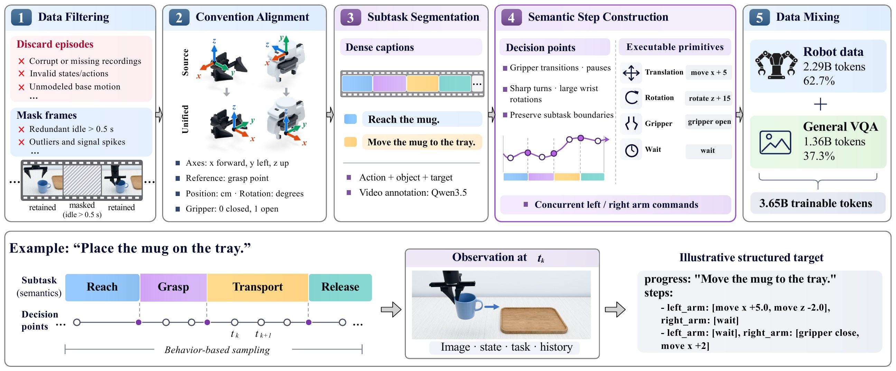
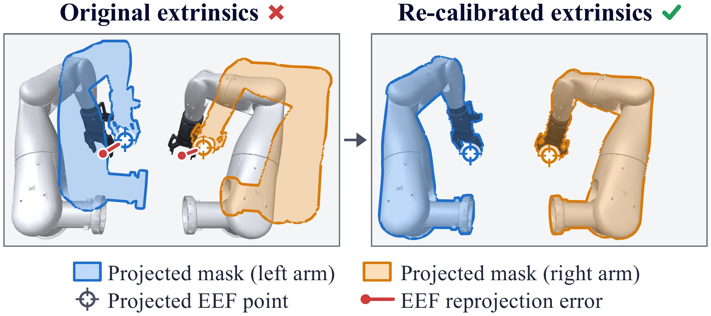
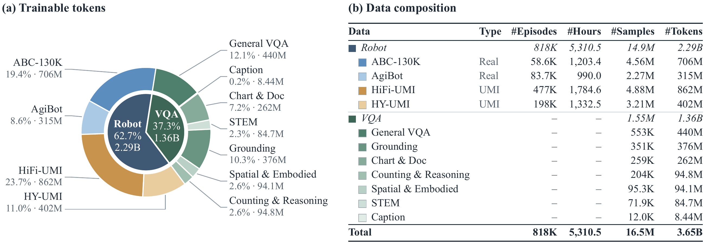
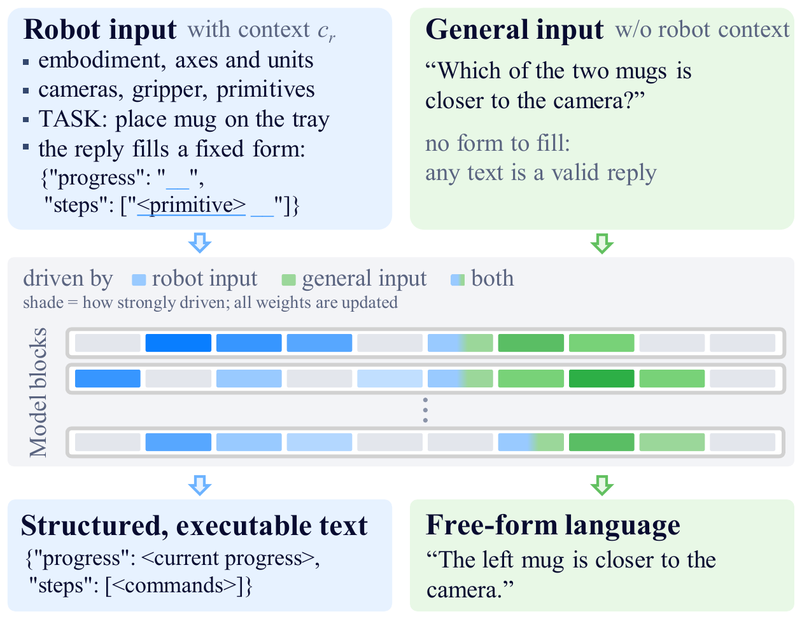
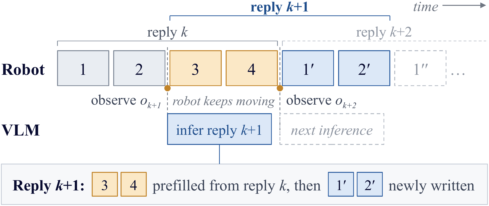
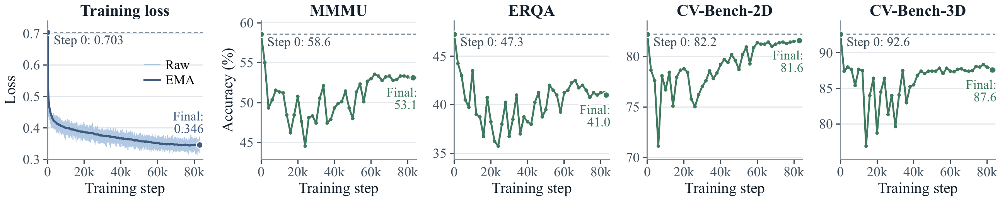
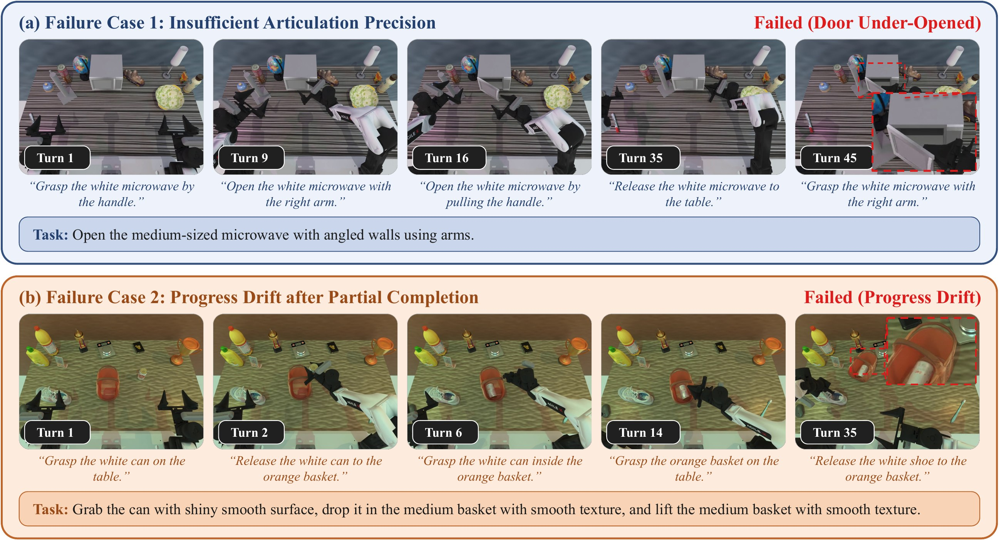

Abstract
Recently, GPT-6 Astra demonstrates strong generalization in robot control, yet limited disclosure of its training leaves open how such capabilities can be reproduced. We introduce nanoAstra, an approach to training vision-language models (VLMs) for generalizable manipulation that combines semantic action modeling with capability-preserving supervised fine-tuning (CP-SFT). nanoAstra represents robot behavior as semantic steps composed of reusable, parameterized action primitives, guided by explicit progress descriptions. Meanwhile, CP-SFT uses an explicit robot-specific system prompt to constrain manipulation outputs to a structured action space, aiming to focus adaptation on robot-specific contexts and promote specialization while minimizing interference with broader pretrained capabilities. With this formulation, we train nanoAstra on more than 5,000 hours of robot data together with general VQA data. On RoboTwin 2.0's randomized benchmark, nanoAstra-9B achieves a 17.8% zero-shot success rate, substantially outperforming advanced VLA and WAM baselines as well as similarly sized VLMs. With inference faster than the corresponding motion execution on a single H20 GPU, our model supports action-chunk-like streaming execution that overlaps inference with motion, reducing the robot's idle time from 35.0% to 6.9%.
Method
Most VLA and WAM policies predict action chunks made of densely sampled control steps. These targets are physically well defined, but they do not mark where one coherent motion ends and the next begins. nanoAstra reorganizes robot experience into semantic steps and adapts the VLM so that it keeps its general capabilities.
Semantic action modeling
Demonstrations are cut at behavioral decision points: gripper transitions, pauses, sharp turns, and large wrist rotations. Each interval becomes a step of reusable, parameterized primitives for translation, rotation, gripper control, and waiting. Each step is paired with a dense progress description that states its local goal.
Capability-preserving SFT
A robot-specific system prompt defines the embodiment, coordinate conventions, and action vocabulary, which softly confines manipulation outputs to a structured response space. Joint training on general VQA data and a digit-weighted numerical loss complete the recipe.
Data pipeline
Data from ABC-130K, AgiBot, HiFi-UMI, and HY-UMI passes through five stages: filtering, convention and camera alignment, subtask segmentation with dense captions, semantic step construction, and mixing with general vision-language data.

Model input at a decision point
- Robot system prompt: embodiment, coordinate conventions, action vocabulary, response format
- Camera image(s)
- Robot state (positions in cm, rotations in degrees, gripper in [0, 1])
- Task instruction and interaction history
Structured response (illustrative)
progress: "Move the mug to the tray." steps: - left_arm: [move x +5.0, move z -2.0] right_arm: [wait] - left_arm: [wait] right_arm: [gripper close, move x +2] # commands within one arm form a combined motion; # the two arms execute concurrently
Camera re-calibration
Robot states and action targets live in the robot-base or scene frame, while the model sees the scene through images, so the camera extrinsics have to be right. Where extrinsics are missing or inaccurate, we re-calibrate the main camera so that projected end-effector positions land on the visible grippers.

Training data
After processing, we keep 5,310.5 hours of manipulation data (about 818K episodes) and mix it with 1.55M general vision-language examples from Honey-Data-V2. The mixture contains about 3.65B trainable tokens: 62.7% from robot data and 37.3% from general vision-language data.

CP-SFT: a softly constrained response space

With the robot system prompt, the VLM predicts task progress and executable semantic steps. Without the prompt, the same model answers general questions in free-form language. Keeping manipulation supervision inside this context-conditioned space is meant to limit changes to the model's output distribution outside robotic contexts.
To improve numerical precision in actions, cross-entropy is supplemented with a modified Wasserstein Number Token Loss. It weights each digit by its decimal place, so significant digits matter more, and adds explicit supervision of the sign. Losses are averaged over original samples across packing, GPUs, and gradient accumulation, so every sample carries equal weight.
nanoAstra-9B is initialized from Qwen3.5-9B and fully fine-tuned for one epoch.
Zero-Shot Manipulation on RoboTwin 2.0
nanoAstra is trained only on real-world manipulation data, with no simulated trajectories, RoboTwin demonstrations, or benchmark-specific fine-tuning. We evaluate on 50 tasks in the randomized setting and average over 10 runs per task. The model runs in closed loop: each turn takes the current observation and returns the current progress and the steps to execute.
| Model | SR | |
|---|---|---|
| VLA | ||
| π0.5 | 1.4 | |
| Xiaomi-Robotics-1 | 2.0 | |
| DM0.5 | 2.4 | |
| LingBot-VLA-2.0 | 10.8 | |
| World-action models | ||
| DreamZero | 0.2 | |
| LingBot-VA | 0.0 | |
| VLMs with thinking | ||
| Qwen3.5-9B | 8.2 | |
| Qwen3.8-27B | 10.8 | |
| Qwen3.5-35B-A3B | 9.0 | |
| Qwen3.5-397B-A17B | 9.0 | |
| VLMs without thinking | ||
| Qwen3.5-9B | 3.2 | |
| Qwen3.8-27B | 3.6 | |
| Qwen3.5-35B-A3B | 3.4 | |
| Qwen3.5-397B-A17B | 4.0 | |
| nanoAstra-9B (ours) | 17.8 | |
Thinking helps every evaluated Qwen model (3.2–4.0% → 8.2–10.8%), but it spends extra reasoning tokens before any action is produced. Without thinking, nanoAstra-9B reaches 17.8%: 14.6 points above Qwen3.5-9B without thinking, 9.6 points above it with thinking, and above the larger Qwen models as well.
Inference Efficiency and Streaming Execution
We compare inference latency with the duration of the motion that each prediction produces. I/M is the inference-to-motion ratio: below 1, inference can be hidden behind execution.
| Model | Infer. | Actions | Motion | I/M ↓ |
|---|---|---|---|---|
| VLA | ||||
| π0.5 | 101 ms | 45.0 steps | 2.70 s | 0.037 |
| StarVLA | 70 ms | 16.0 steps | 0.96 s | 0.073 |
| X-VLA | 143 ms | 28.6 steps | 1.71 s | 0.084 |
| World-action models | ||||
| Fast-WAM | 523 ms | 27.3 steps | 1.64 s | 0.32 |
| Motus | 1.93 s | 16.0 steps | 0.96 s | 2.01 |
| LingBot-VA | 8.89 s | 22.2 steps | 1.33 s | 6.67 |
| VLM-based | ||||
| Qwen3.5-9B w/ thinking | 60.7 s | 1.6 cmds | 1.42 s | 42.8 |
| nanoAstra | 3.89 s | 3.5 cmds | 2.87 s | 1.36 |
| nanoAstra † | 1.69 s | 3.5 cmds | 2.66 s | 0.64 |
Streaming execution
If execution waits for each reply, VLM latency forces a stop-and-go pattern. On a single H20, inference is already shorter than the motion it produces, so the two can overlap. Steps are executed as they arrive in the token stream, and the next reply is requested before the current one has finished executing.

| Execution | SR (%) | Wait ↓ | Idle ↓ |
|---|---|---|---|
| Blocking | 11.2 | 2.1 steps | 35.0% |
| Streaming | 12.9 | 0.2 steps | 6.9% |
Vision-Language Capability Retention
We track the training loss and general benchmark accuracy (MMMU, ERQA, CV-Bench) throughout training. VQA accuracy dips early, then recovers and stabilizes instead of degrading steadily. CV-Bench-2D nearly returns to its initial level, and the other benchmarks keep most of their initial accuracy. Some degradation remains, and we expect broader VQA co-training data to reduce it further.

| Benchmark | Step 0 | Final | Change |
|---|---|---|---|
| MMMU | 58.6 | 53.1 | −5.5 |
| ERQA | 47.3 | 41.0 | −6.3 |
| CV-Bench-2D | 82.2 | 81.6 | −0.6 |
| CV-Bench-3D | 92.6 | 87.6 | −5.0 |
Failure Analysis
Both cases make substantial progress before running out of turns. In (a), the predicted progress follows the grasp–open–release cycle of the microwave door, but each opening step is a straight-line translation, so the door only opens partway. In (b), the can goes into the basket early, but the progress later returns to the completed subtask and then drifts to a distractor shoe, so the basket is never lifted. Object-centric primitives for articulated objects and explicit tracking of completed subtasks are natural next steps.

BibTeX
@article{guo2026nanoastra,
title = {A Glimpse of Training VLMs as Foundation Models for Robotic Manipulation},
author = {Guo, Meng-Hao and Zhang, Yi and Mo, Zhe-Han and Wang, Han-Zheng and
Wang, Jia-Jun and Chen, Xin-Sheng and Song, Jiaxi and Deng, Yi-Xuan and
Li, Jia-Ning and Chu, Xuanyu and Zhang, Hengrui and Gao, Huan-ang and
Rao, Yongming and Hu, Shi-Min},
journal = {arXiv preprint},
year = {2026}
}